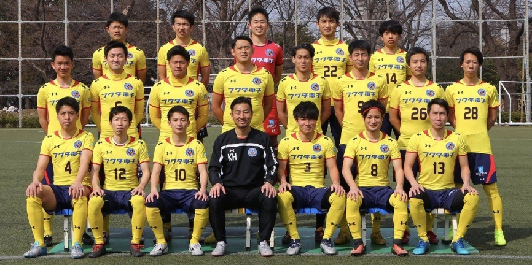

沿革
2015年 「慶應BRB」を母体に「東大LB」有志が合流し「LB-BRB TOKYO」が誕生。「慶應BRB」の名は東京都リーグ3部であった「慶應ソッカークラブ」が引き継ぐ
2016年 「東大LB」は「LB-BRB BUNKYO」へ改称を発表。LB-BRB TOKYOのサテライトチームとなる。余波として「東大LB Second」が「東大LB」となる。
2017年 「LB-BRB TOKYO」が「東京ユナイテッドFC」に改称し、同年12月に「LB-BRB BUNKYO」が「東京ユナイテッドFC＋Plus」に名称変更
クラブの声明

成績
- 2017年 LB-BRB BUNKYOとして東京都1部リーグ2位 関東社会人サッカー大会2回戦敗退
- 2018年 東京ユナイテッド＋Plusの初代監督（選手兼任）は筑波の鉄人橋本慶氏、主将は砂川優太郎選手
- 2020年 東京都1部リーグ3位 関東社会人サッカー大会2回戦敗退 主将は木村快選手。
- 2021年 東京都1部リーグ 残留 この年も木村快選手が主将
- 2023年 東京都1部リーグ10位 残留
- 2024年 東京都1部リーグ12位 残留
- 2025年 東京都1部リーグ16位 東京都2部リーグへの降格が決定（無念）
■福田雅元監督より（抜粋）
（前略）クラブの中において、プロもアマチュアもシニアも女子もアカデミーも障がい者も、誰もが対等な関係で、互いに敬意をもって存在する。そんなクラブをつくることが、日本のスポーツ文化の発展に資すると思う次第です。
そんなわけで、プラスは２ndでもBチームでもなく、「プラス」なんです。社会人として身を立て社会から必要とされながら、それでもサッカーと向き合い続けるということを通じて、きっとクラブに「プラス」の価値をもたらしてくれる、という思いが込められています。 （福田雅共同代表 2023年5月27日）